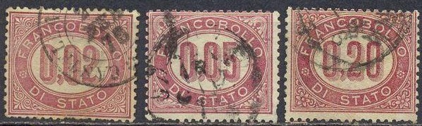
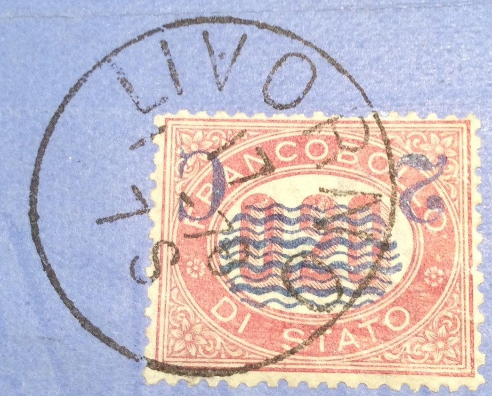

Note: on my website many of the
pictures can not be seen! They are of course present in the
catalogue;
contact me if you want to purchase the catalogue.


0,02 L red 0,05 L red 0,20 L red 0,30 L red 1,00 L red 2,00 L red 5,00 L red 10,00 L red
The corner designs are different for each value. These stamps were used until 1877 and were then overprinted to be used as postage stamps.
Value of the stamps |
|||
vc = very common c = common * = not so common ** = uncommon |
*** = very uncommon R = rare RR = very rare RRR = extremely rare |
||
| Value | Unused | Used | Remarks |
| 0,02 | c | c | |
| 0,05 | c | c | |
| 0,20 | c | c | |
| 0,30 | c | c | |
| 1,00 | * | * | |
| 2,00 | * | * | |
| 5,00 | *** | *** | |
| 10,00 | *** | *** | |

2 c on 0,02 red 2 c on 0,05 red 2 c on 0,20 red 2 c on 0,30 red 2 c on 1,00 red 2 c on 2,00 red 2 c on 5,00 red 2 c on 10,00 red
Value of the stamps |
|||
vc = very common c = common * = not so common ** = uncommon |
*** = very uncommon R = rare RR = very rare RRR = extremely rare |
||
| Value | Unused | Used | Remarks |
| 2 c on 0,02 | *** | * | |
| 2 c on 0,05 | R | *** | |
| 2 c on 0,20 | *** | c | |
| 2 c on 0,30 | *** | * | |
| 2 c on 1,00 | *** | * | |
| 2 c on 2,00 | *** | * | |
| 2 c on 5,00 | *** | * | |
| 2 c on 10,00 | *** | ** | |
All values exist with inverted overprint: RR.
Postal stationary with a similar design 'CARTOLINA POSTALE DI
STATO' in the value 0,10 c red

Probably a forged 2 c overprint on a block of two stamps (one
without overprint)

Forged inverted overprints.
30 c red 60 c brown 90 c violet
Value of the stamps |
|||
vc = very common c = common * = not so common ** = uncommon |
*** = very uncommon R = rare RR = very rare RRR = extremely rare |
||
| Value | Unused | Used | Remarks |
| All values | * | * | |
They were also surcharged in 1925 with 'UNA LIRA' and bars (value of all stamps: *):


They also exist with overprint 'Libia', to be used in Libya or 'Colonia Eritrea' to be used in Eritrea.
Tree 20 c blue 40 c green 50 c violet Man with wings 1 L red 2 L brown 3 L red
{kind=link}